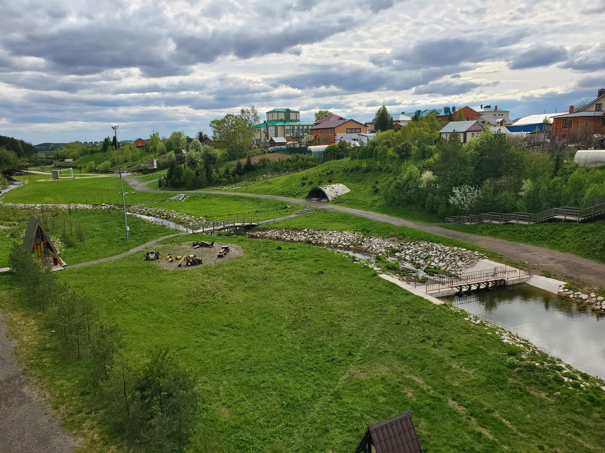

Саби́нский райо́н (тат. Саба районы) — административно-территориальная единица и муниципальное образование (муниципальный район) в составе Республики Татарстан Российской Федерации. Расположен в северной части республики. Административный центр — посёлок городского типа Богатые Сабы. Общая площадь Сабинского района составляет 1097,7 км². По состоянию на 2020-й в районе проживают 31 041 человек. Этническую композицию района на 96 % составляют татары, на 3 % — русские, а 1 % — представители других национальностей[5]. Заселение территории современного Сабинского района началось ещё в эпоху неолита. Первые упоминания о селе Богатые Сабы относятся к XIII веку. В составе ТАССР Сабинский район был образован 10 августа 1930 года[6]. В мае 2020-го в районе завершили строительство индустриального парка «Саба» и объявили о создании пищевого кластера